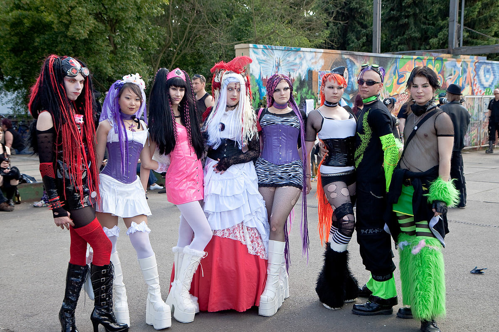

О культуре
Культу́ра (от лат. cultura - возделывать, позднее — воспитании образование, развитие, почитание) —понятие, имеющее огромное количество значений в различных областях человеческой жизнедеяте-льности. Культура является пред -метомизучения философии, культурологии, истории, искусствознания, лингвистики (этнолингвистики), политологии, этнологии, психологии, экономики, педагогики и др.
Культура представляет собой совокупность устойчивых форм человеческой деятельности, без которых она не может воспроизводиться, а значит — существовать.
Культура — это набор правил, которые предписывают человеку определённое поведение с присущими ему переживаниями и мыслями, оказывая на него, тем самым, управленческое воздействие.
Источником происхождения культуры мыслится человеческая деятельность, познание и творчество.
История культуры
Впервые вопрос об определении культурной истории сформулировал немецкий историк Карл Лампрехт в 1897 году. Многие историки видят истоки дисциплины в XIX или в XVIII веках: в трудах Якоба Буркхардта или даже в работах более ранних мыслителей -Джамбаттиста Вико или Вольтера. Современный британский историк Питер Бёрк выделяет четыре этапа развития культурной истории: классический период изучение социальной истории искусства (с 1930-х годов); появление истории народной культуры (с 1960-х годов); «новая культурная история». Такой подход, однако, оспаривается: так, немецкий историк Уте Даниэль полагает, что не следует писать «историю культурной истории», которая является современной дисциплиной.
К классическому периоду условно можно отнести работы Якоба Буркхардта («Цивилизация Возрождения в Италии», 1860), Йохана Хёйзинга («Осень Средневековья», 1919) и Дж. М. Янга ("Викторианская Англия, 1936). Классические историки изучали историю искусства, литературы, философии, науки, пытались понять «дух времени» той или иной эпохи .Йохан Хейзинга полагал, что Возрождение было кардинально отличным от Средневековья. Он считал задачей историка находить те или иные «культурные образцы» в литературе и искусстве конкретной исторической эпохи, изучая «темы», «символы», «формы поведения», «чувства»; например, рыцарственность, страх смерти, любовь или война.
Культура в современном мире
В развитии современного мира важную роль играет развитие культуры, положение которой существенно меняется. В современных исследованиях подчеркивается, что вне учета культурной специфики общества невозможна реализация той или иной модели общественного развития. Именно культура формирует и упорядочивает картину мира, создавая единую систему мира и единые способы оценки поведения. Отсутствие такой системы ценностей, которая бы признавалась большинством населения в качестве нравственной опоры жизнедеятельности – один из факторов, влияющих на социальную ситуацию в переходный период и создающих предпосылки торможения реформ.
Интенсивные изменения в обществе день ото дня порождают новые проблемы с культурным наследием, его сохранением и возрождением. Культурное наследие в условиях динамичного мира подвергается угрозам от загрязнения окружающей среды, уничтожается в результате военных действий, разрушается при ограниченных ресурсах, недостатках знаний, страдает от неконтролируемого туризма. В мире существуют проблемы, связанные с использованием культурного наследия для достижения экономических целей, с незаконной торговлей произведениями искусства, манипулированием деятельностью музеев. Нуждаются в проработке вопросы доступности архивов и музейных коллекций, развития исследований по интерпретации культурного наследия и т.д.